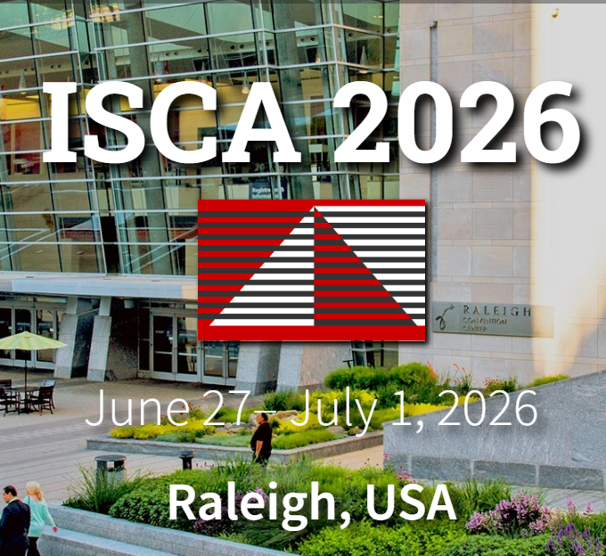
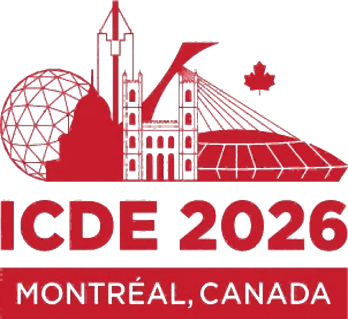
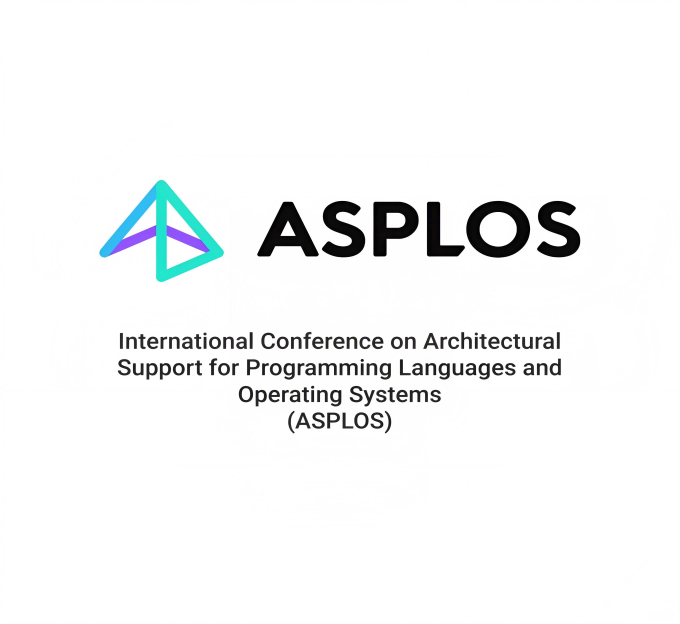
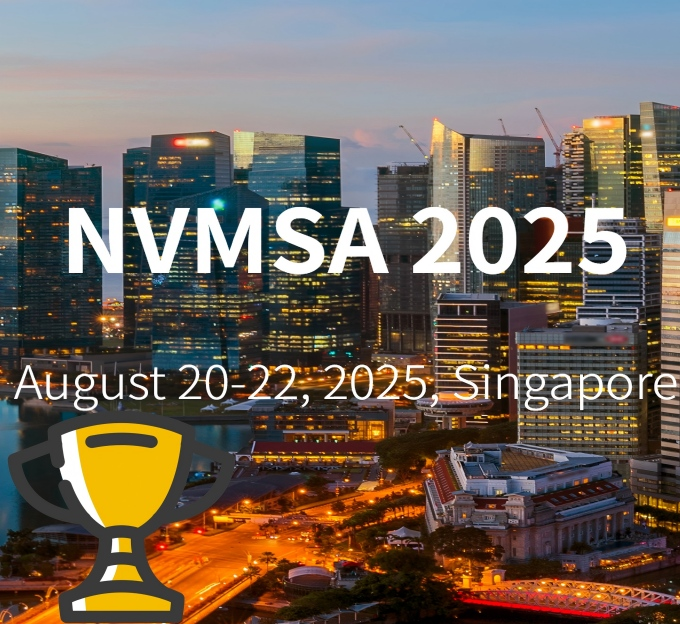
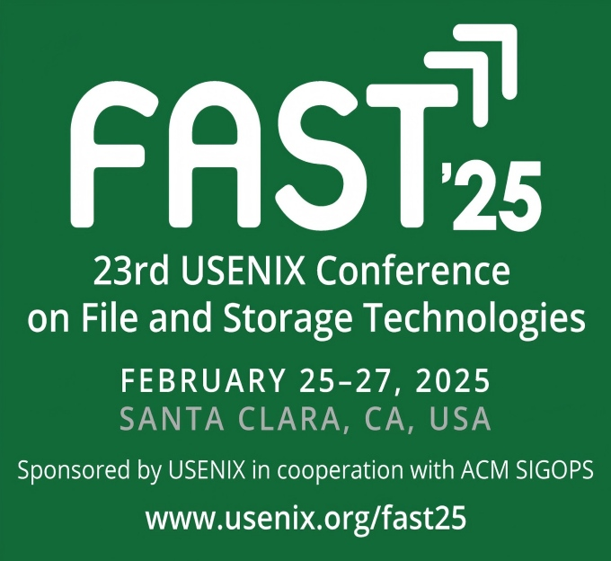
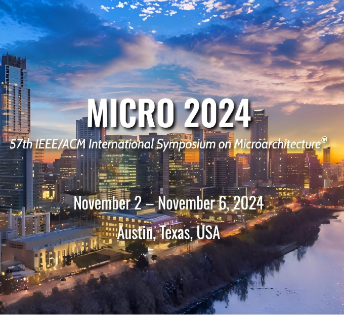

Flash Memory, Memory Management and File System. My research results are published in top-tier international conferences, such as MICRO, ISCA, ASPLOS, HPCA, FAST, ICDE, DAC. My academic excellence has been honored with several awards, including Tenth Young Elite Scientists Sponsorship Program by CAST, ACM SIGCSE China Rising Star Award (2024), Xiaomi Young Talents Program, IEEE NVMSA Best Paper Award (2024/2025), and Alibaba Cloud-CCF Storage Committee Outstanding Paper Award (2019/2020).





